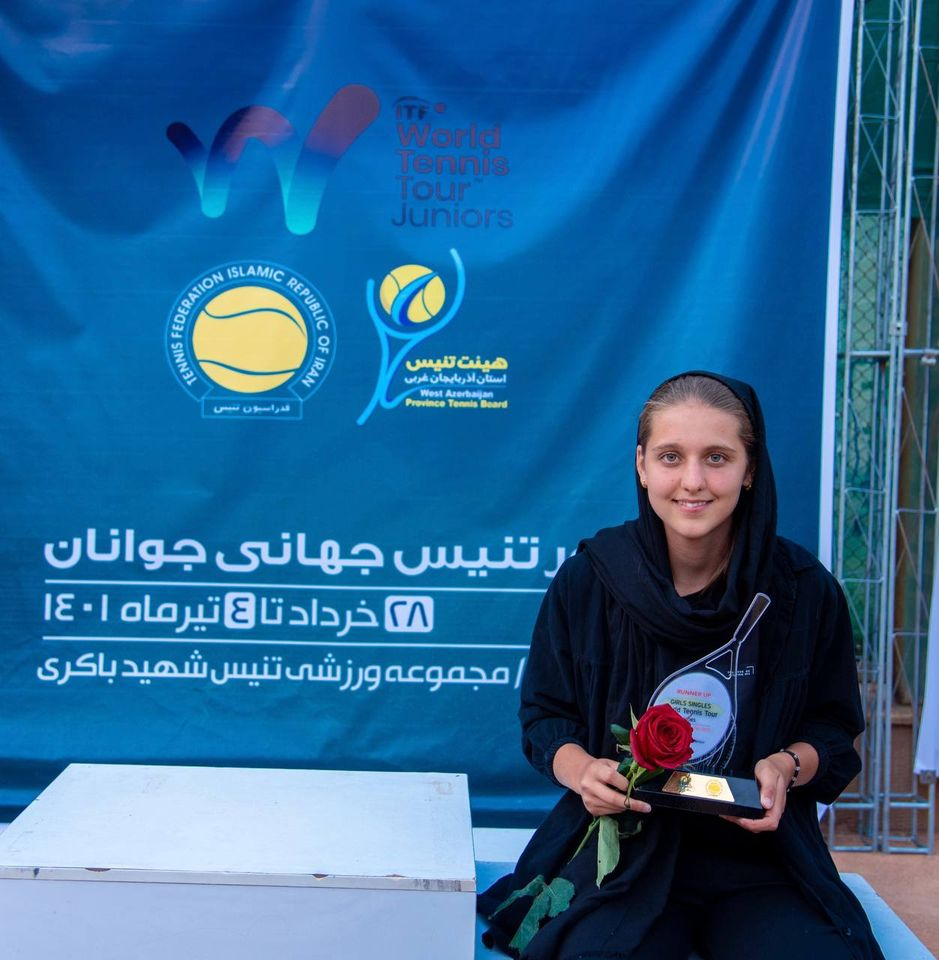
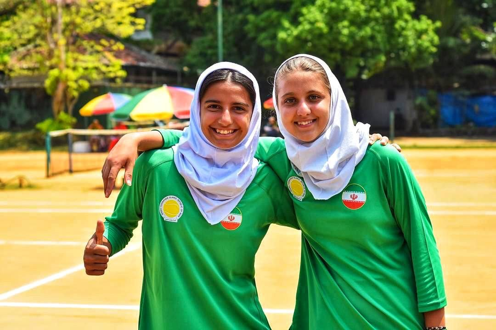
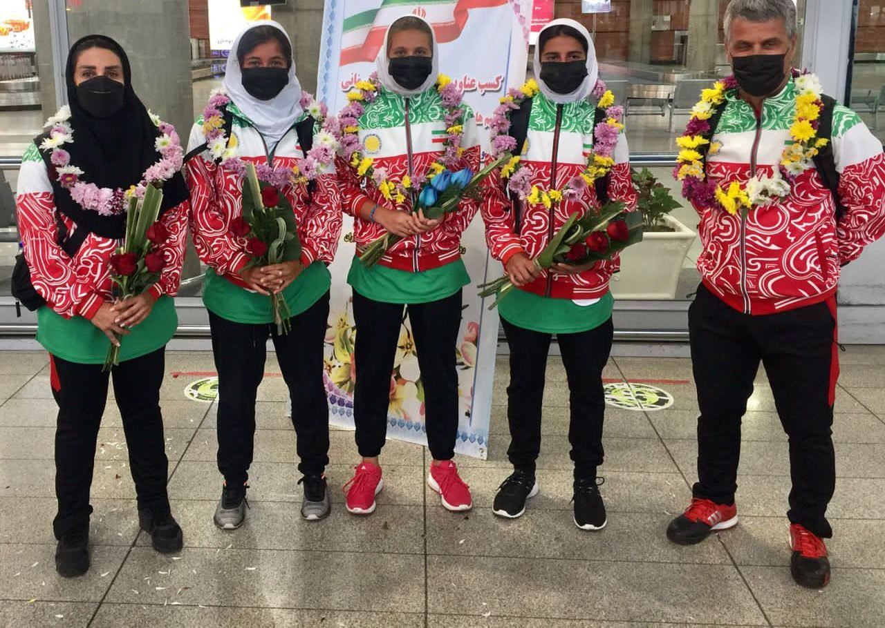
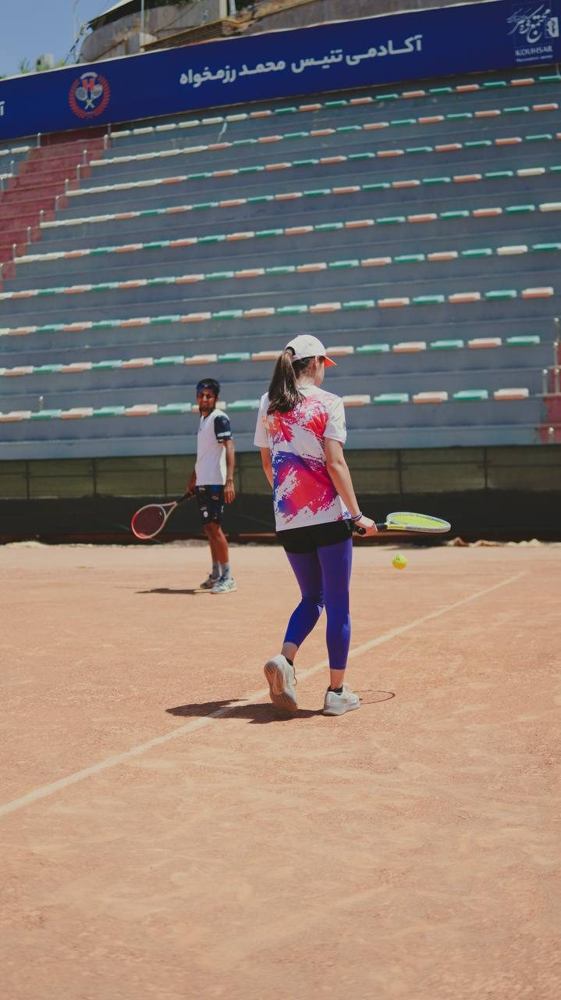
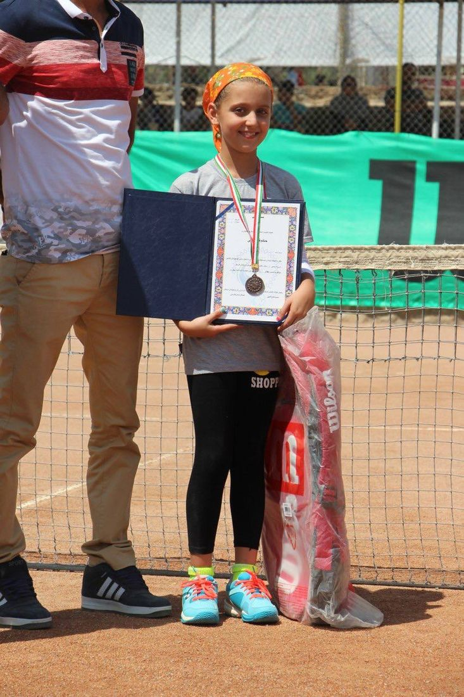
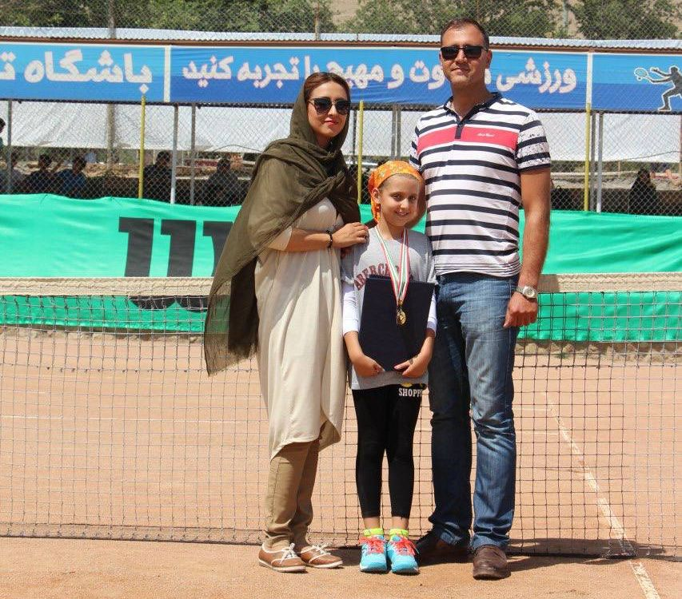

کلاس خصوصی
تمام وقت جلسه مال خودته. سریعترین راه برای درست کردن تکنیک، چون هر ضربهات دیده و اصلاح میشه.
۱,۵۰۰,۰۰۰ تومان · هر جلسه
پکیج ۱۰ جلسه: ۱۲,۰۰۰,۰۰۰ تومان
معمولاً کمتر از یک ساعت جواب میدم.
روش من سادهست: اول نگاه میکنم چطور بازی میکنی، بعد یکی دو تا چیز رو درست میکنیم که بیشترین اثر رو داره. نه ده تا نکته با هم، نه تمرینهای بیربط. هر جلسه یه هدف مشخص داره و آخرش میدونی دقیقاً روی چی کار کنی.
کلاسها آروم و بدون فشارن. قرار نیست خجالت بکشی یا حس کنی عقبی. قراره بازی کردن برات لذتبخش بشه.
دو ساله که پدل هم بازی میکنم. چون ۱۳ سال تنیس پشتمه، چیزهایی که توی پدل دیر جا میافتن، مثل والی، اسمش، حرکت پا و خوندن توپ، برای من از قبل جا افتادهن. و چون خودم از تنیس اومدم، میدونم کسی که از تنیس یا از صفر میاد سراغ پدل، دقیقاً کجا گیر میکنه.






هر کدوم رو که انتخاب کنی، تمرینها متناسب با سطح و هدف خودت چیده میشه. قبل از شروع با هم حرف میزنیم تا ببینیم کدوم به دردت میخوره.
تمام وقت جلسه مال خودته. سریعترین راه برای درست کردن تکنیک، چون هر ضربهات دیده و اصلاح میشه.
با دوست، همسر یا همبازیت. هزینهش کمتر از خصوصیه و چون یه نفر روبهروته، تمرین امتیازی و بازی واقعی هم میشه گذاشت.
پرانرژیترین کلاس. تمرین، بازی و کمی رقابت دوستانه — برای کسی که میخواد کنار یاد گرفتن، آدمهای جدید هم پیدا کنه.
وقتی درس نمیخوای، توپ خوب میخوای. با سابقهی بازی حرفهای و تیم ملی میتونم توپ رو با عمق و سرعت ثابت بهت بدم: رالی طولانی، کار روی یه ضربهی خاص، یا ست بازی کردن. هر جا خواستی فشار رو میبرم بالاتر.
جلسهی استعدادیابی برای بچههایی که تازه با تنیس آشنا میشن — بازیمحور، بدون فشار و بدون هزینه. معمولاً پنجشنبه و جمعهست و وقتش رو با یه تماس هماهنگ میکنیم.
برای بچههایی که یه مدت بازی کردن و میخوان ببینن تا کجا میتونن جلو برن. سطحسنجی و مسیر پیشنهادی، باز هم بدون هزینه. معمولاً پنجشنبه و جمعهست و وقتش با تماس هماهنگ میشه.
همهی قیمتها به تومانه. کلاسهای استعدادیابی رایگانن و معمولاً پنجشنبه و جمعه برگزار میشن، ولی زمین محدوده و نوبتش فقط با تماس تلفنی گرفته میشه. پدل حداکثر دو نفرهست، برای همین کلاس گروهی نداره.
توی چند مجموعهی ورزشی در مشهد کلاس دارم. بگو کجای شهری تا نزدیکترین زمین و ساعتی که آزاده رو با هم پیدا کنیم.
دو تا راه داری: فرم رزرو رو پر کن، یا مستقیم تو واتساپ پیام بده. هر کدوم رو راحتتری — بقیهش با من.
فرم رزرو دو دقیقهست: چند جلسه در هفته، چه ساعتی و کدوم زمین. یا اگه راحتتری، همینا رو تو واتساپ بنویس.
اولین جلسه بیشتر برای دیدن سطحته. با هم بازی میکنیم، من نگاه میکنم و آخرش میگم از کجا شروع کنیم.
هفتهای یک یا دو جلسه، با یه برنامهی مشخص. هر چند هفته یه بار میبینیم کجا بهتر شدی و بعدش چی.
خودم بازیکن بودم و هستم، با تجربهی مسابقه. این فقط یه خط توی رزومه نیست — روی چیزی که سر کلاس میبینی مستقیم اثر داره.
استرس، فشار امتیاز و تصمیمی که باید توی یه ثانیه بگیری — خودم توش بودم. تمرین رو جوری میچینم که برای همون لحظه آماده باشی، نه فقط برای تمرین.
از نگاه یه بازیکن نگاه میکنم: جزئیات تکنیک، حرکت پا و تصمیمگیری. چیزهایی که از بیرون زمین راحت از چشم میافته.
لازم نیست فقط تعریف کنم ضربه باید چطوری باشه؛ میتونم اجراش کنم. دیدنِ اجرای درست خیلی زودتر از شنیدنش جواب میده.
چون خودم این مسیر رو رفتم، میدونم چی شدنیه و چقدر طول میکشه. برنامهای میچینم که بتونی واقعاً انجامش بدی، نه یه لیست قشنگ.
فرم رو پر کن تا بدونم دنبال چی هستی و کِی و کجا برات راحته — بعد خودم باهات تماس میگیرم. اگه راحتتری، مستقیم تو واتساپ پیام بده.